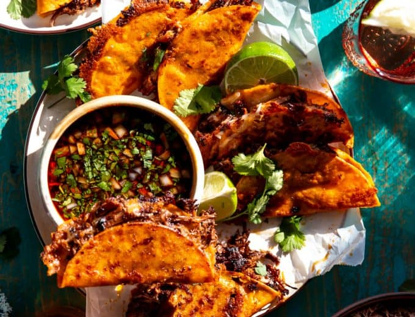

Tacos are thought to come from Mexico, long before the Spanish arrived.
Ancient Mexicans used freshly made, soft, flat corn tortillas and gave
them with fillings like fish and cooked organs. It was a staple meal that
provided vital nutrients and energy to those who consumed it.

The history of Birria originates when Goats were first brought from Spain to Mexico.
Spaniards allowed the Natives to consume goat meat believing that it was a tough
meat. Regional Natives were not frightened by this “birria” and used ancient
cooking techniques to marinate and tenderize the meat.
Ingredients
- 2 lbs Short Ribs
- 5 Bay Leaves
- 1 tsp mexican Oregano
- 1 tsp ground Cumin
- 1 tsp Salt
- 1-2 tsp Chili Powder
- 1 Carrots
- 1 large White Onion
- 1 Garlic bulb
- 14-16 Corn Tortillas
- 3 tbsp Chicken Bouillon
- 4 lbs Chuck Roast
- 8 Guajillo Peppers
- 2 cups Quesadilla Cheese
- 7-8 cups hot water
Description
This recipe may look long, but it’s because I want to give you
as much information as possible to create this flavorful
meal on your own at home. This deep rich broth and meat
is great served as a stew. But if you want to go the extra few
steps and fry up some tacos you will NOT be disappointed.
Recipe Credits:
Steps
- Combine Ingredients: In large pot add meat, onion, garlic, carrots, bay leaves and dried peppers.
Cover with water. (This uses my large 7 qt pot and fills it to the top!)
- Add Seasonings: Add chicken bouillon, oregano, cumin and salt, stir to combine. Bring to a boil.
- Skim: After 30 minutes, skim the top of the pot to remove impurities from the bone cooking out.
(will look like little bits of foam on the top)
- Blend Peppers: Remove the peppers (should be softened) and place in a blender or food processor.
Blend until smooth, add up to 1/4 cup of broth if needed to help get a smooth consistency.
- Strain: Strain the peppers if needed to remove bits of skin (if using a high powered blender this
step is not necessary).
- Combine: Add the blended peppers into the broth and stir to combine.
- Season: Add in the chili powder as desired to get a nice deep red color to the broth.
- Simmer: Cover and continue to simmer for about 3 hours or until meat is tender and easily shredding
on it’s own. (remove lid and give a stir every 40 minutes or so. Can also taste the broth once the
meat is cooked through and adjust seasonings as needed).
- Reserve Grease: Skim the grease from the top of the broth (SAVE THIS!) pour the grease into a small
skillet or saucepan, this is used for making the tacos if desired.
- Remove the onion, garlic, carrots, and bay leaves from the broth. (these ingredients were in the
broth for flavoring…people are more than welcome to eat and enjoy them, so save them if you want!)
- Serving: Remove the meat from the broth and cut into large chunks for serving. Remove any bones.
To Serve as a Stew:
- Serve a couple pieces of meat into a bowl, spoon broth on top.
- Top with diced onion and fresh cilantro. Serve with a wedge of lime to squeeze in.
To Make Quesabirria Tacos
- Chop Meat: Remove the meat from the broth, and finely chop until only small pieces remain.
- Heat a large skillet/griddle over medium heat.
- Frying Tortillas: Dip the corn tortilla into the reserved grease from the broth.
- Place on heated griddle, top with the chopped meat and cheese.
- Fold the taco over and press down with a spatula. Continue cooking until the taco is
crisp and golden on the bottom, about 2-3 minutes. Then flip and continue cooking the other side.
(it’s ok if some of the cheese leaks out while frying, the golden cheese is the best part!) Plus
you can spoon some additional grease onto the tortilla while it cooks if you need more coloring
to the tortilla.
- Cook until both sides are crisp. Remove from heat and allow to cool briefly before serving, will be very hot.
- Continue until all tacos are cooked.
- Top tacos with fresh cilantro and onion if desired.
- Serving: Serve with a bowl of the broth topped with onions and cilantro on the side.
- Dip the tacos into the broth while eating.
Back Home